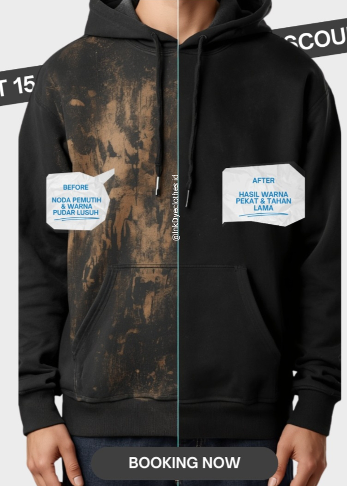
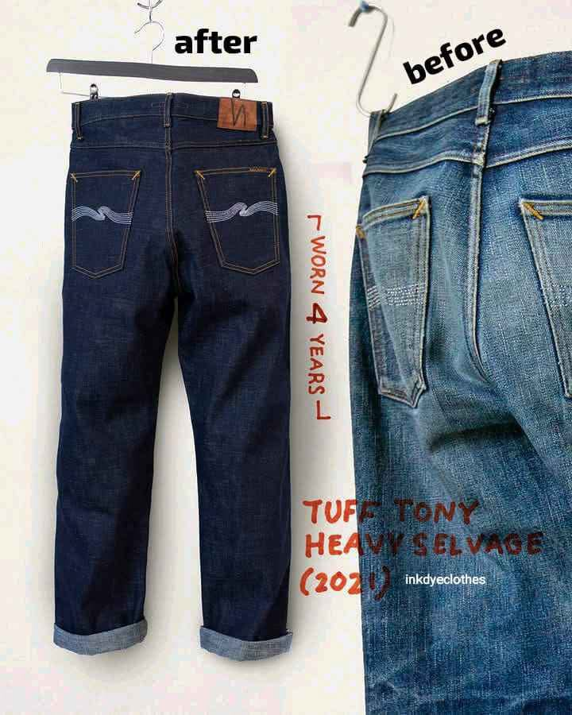

Before
Kondisi warna sebelum proses
Mengembalikan warna pakaian yang telah memudar melalui proses dyeing yang disesuaikan dengan kondisi bahan.
Kirim foto pakaian terlebih dahulu. Kami cek kelayakannya sebelum proses.
the real spesialis pencelupan pakaian pudar & dyeing Fabrics
Contoh hasil nayata dari pakaian costumer kami yang sudah membuktikan bahwa pakaian lama tidak harus di ganti dan justru menambah nilai kepercayaan tersendiri .


Beberapa pakaian sebenarnya masih sangat layak dipakai. secara data masalah hanya ada di warna.
Warna hitam yang dahulu pekat mulai terlihat kusam setelah penggunaan dan pencucian berulang.
Bentuk pakaian masih bagus, tetapi warna tidak lagi terlihat seperti sebelumnya.
Masih nyaman dan ingin dipakai, tetapi mulai jarang digunakan karena warnanya sudah berubah.
Pakaian branded atau memiliki nilai personal yang masih ingin dipertahankan.
Tidak semua pakaian memiliki karakter bahan dan kondisi yang sama. Karena itu, kelayakan pakaian diperhatikan sebelum proses.
Melihat apakah material dan kondisi pakaian masih layak untuk diproses.
Warna awal dan tingkat pemudaran menjadi pertimbangan dalam menentukan kemungkinan hasil.
Kondisi pakaian diperhatikan untuk mengurangi risiko yang tidak diinginkan selama proses.
Kami tidak menjanjikan hasil yang tidak sesuai dengan kondisi pakaian.
Setiap pakaian melalui tahapan yang disesuaikan dengan kondisi dan materialnya.
Kondisi pakaian dan material diperiksa sebelum proses.
Pakaian dipersiapkan sesuai kebutuhan proses dyeing.
Proses pewarnaan dilakukan berdasarkan kondisi dan target warna.
Tahapan penguncian warna menjadi bagian dari proses pengerjaan.
Pencucian dan finishing dilakukan sebelum pakaian masuk tahap pemeriksaan akhir.
Pakaian diperiksa kembali sebelum dikemas dan dikirim.
Inkdyeclothes menggunakan pendekatan proses yang memperhatikan material dan kondisi pakaian, bukan sekadar mengejar warna yang terlihat lebih gelap.
Feedback customer menjadi bagian dari bagaimana kami melihat kualitas pengerjaan.
Kirim informasi pakaian terlebih dahulu agar dapat kami cek sebelum proses.
Foto bagian pakaian yang ingin dikembalikan warnanya.
Sertakan foto dan warna yang diinginkan.
Kondisi dan kelayakan pakaian kami cek terlebih dahulu.
Estimasi proses dan biaya diberikan setelah pengecekan.
Setelah proses disepakati, pakaian dapat dikirim untuk dikerjakan.
Kirim foto pakaian dan warna yang kamu inginkan. Kami cek terlebih dahulu sebelum menentukan prosesnya.
Chat WhatsApp